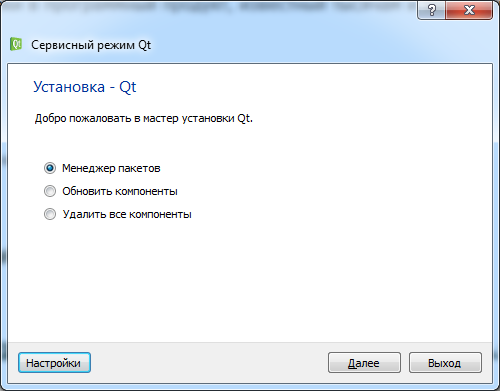

Введение в Qt, Qt Creator, QtCore, QtGui, отладка
QT - история.
Первый выход в свет библиотеки Qt состоялся в мае 1995 года. Первоначально она разрабатывалась Хаавардом Нордом (главный управляющий Trolltech) и Эриком Чамбенгом (президент компании Trolltech). Хаавард и Эрик встретились в стенах Норвежского Технологического Института, в городе Тронхейме, где они получали высшее образование.
Хаавард начал интересоваться проблемами создания графического интерфейса на C++ с 1988 года. Тогда он получил от Шведской компании заказ на разработку библиотеки, средствами которой можно было бы реализовать графический интерфейс приложений. Спустя пару лет, летом 1990 года, Хаавард и Эрик начали совместную работу над приложением баз данных, которое обрабатывало снимки, получаемые с аппарата ультразвукового обследования. Система должна была иметь возможность работы через графический интерфейс с пользователем, под управлением операционных систем Unix, Macintosh и Windows. Однажды, Хаавард и Эрик вышли на улицу, чтобы подышать свежим воздухом и насладиться летним солнцем. Они присели на скамейку в парке и Хаавард сказал: "Нам нужна объектно-ориентированная система отображения информации". В результате обсуждения была заложена основа, для создания объектно-ориентированной, мультиплатформенной библиотеки, к разработке которой они должны были вскоре приступить.
В 1991 году Хаавард написал первые несколько классов, из которых потом и появилась Qt. Эрик занялся разработкой общего дизайна библиотеки. На следующий год Эрику пришла в голову идея реализации "сигналов и слотов" -- простой но очень мощной парадигмы программирования графического интерфейса. Хаавард подхватил идею и воплотил ее в код. К 1993 году они завершили разработку первого графического ядра и приступили к созданию визуальных компонентов (widgets). В конце года Хаавард предложил Эрику открыть совместное дело и выпустить "лучшую в мире библиотеку реализации графического интерфейса на C++".
1994 год, для двух молодых программистов, начался неудачно. У них не было ни заказов, ни готового продукта, ни денег. К счастью, их жены имели работу и готовы были поддержать своих супругов в течение двух лет, которые требовались на доведение библиотеки до того состояния, в котором она могла бы приносить доход.
В качестве префикса, в именах классов, был выбран символ "Q", поскольку Хааварду очень нравилось как он выглядел в Emacs. Символ "t" был выбран потому, что с него начиналось слово "toolkit", по аналогии с "Xt" - "X toolkit". Компания была зарегистрирована 4 марта 1994 года под названием "Quasar Technologies", которое затем было преобразовано в "Troll Tech", а затем и в "Trolltech".
В апреле 1995 года, благодаря содействию профессора, у которого обучался Хаавард, Норвежская компания Metis заключила с ними контракт на разработку программного обеспечения на базе Qt. Примерно в то же время Trolltech нанял Арнта Гульбрандсена (Arnt Gulbrandsen), который изобрел и воплотил в жизнь справочную систему Qt. Кроме того он внес существенный вклад в разработку библиотеки.
20 мая 1995 года, Qt 0.90 была выложена на sunsite.unc.edu. Шесть дней спустя, выход библиотеки был анонсирован на comp.os.linux.announce. Это был первый публичный выпуск. Qt тогда могла работать как под управлением Windows, так и под управлением Unix, предоставляя разработчикам единый API (Прикладной Интерфейс). Библиотека была выпущена под двумя лицензиями: коммерческой -- для разработки коммерческого программного обеспечения, и свободной -- для разработки программ с открытым исходным кодом. Контракт с фирмой Metis помог сохранить Trolltech на плаву, поскольку на протяжении долгих 10 месяцев не была продано ни одной коммерческой версии библиотеки.
В марте 1996 года, Европейское Космическое Агентство закупило сразу 10 коммерческих лицензий. С несгибаемой верой в успех, Эрик и Хаавард наняли еще одного разработчика. В мае вышла Qt 0.97, а 24 сентября 1996 года увидела свет Qt 1.0. К концу года появилась Qt 1.1, а число покупателей достигло восьми, которые закупили 18 лицензий. В этом же году был основан проект KDE, во главе с Матиасом Эттричем.
В апреле 1997 года вышла Qt 1.2. Решение Матиаса, об использовании Qt в качестве основы для KDE, де-факто сделало библиотеку стандартом, для разработки графического интерфейса в Linux. В сентябре 1997 года вышла Qt 1.3.
Матиас присоединился к Trolltech в 1998 году, а в сентябре этого же года состоялся выход очередной версии Qt -- 1.40. В июне 1999 года вышла Qt 2, в которую было внесено большое количество архитектурных изменений. К тому же она стала более зрелой, чем ее предшественницы. Для поддержки Unicode в нее было добавлено 40 новых классов. Qt 2 была выпущена на основе новой открытой лицензии -- Q Public License (QPL), которая соответствовала Open Source Definition. В августе 1999, Qt победила на LinuxWorld, в номинации "Лучшая библиотека". Примерно в то же время была образована Trolltech Pty Ltd (Австралия).
Первый выпуск Qt/Embedded состоялся в 2000 году. Она была разработана для работы в устройствах под управлением Embedded Linux и предоставляла свою оконную подсистему -- легковесную замену X11. И Qt/Embedded, и Qt/X11 предлагались под широко используемой лицензией GNU General Public License (GPL), так же как и под коммерческими лицензиями. В конце 2000 года, Trolltech образовала Trolltech Inc. (США) и выпустила первую версию Qtopia -- графическая среда для карманных устройств. В 2001 и в 2002 годах, Qt/Embedded стала победительницей на LinuxWorld, в номинации "Лучшее решение для Embedded Linux".
В 2001 году вышла Qt 3. Теперь эта библиотека может работать под управлением Windows, Unix, Linux, Embedded Linux и Mac OS X. В ее состав вошли 42 новых класса, а общий объем кода перевалил за 500 000 строк. Qt 3 стала победительницей Software Development Times "Jolt Productivity Award" 2002 года.
С момента рождения, из года в год, компания удваивала объем продаж. Этот успех обеспечивался высоким качеством библиотеки и простотой ее использования. На протяжении практически всего периода существования компании, за маркетинговую политику и объем продаж отвечали всего несколько человек. Менее чем за десятилетие, Qt превратилась из малоизвестной библиотеки в программный продукт, известный тысячам и тысячам разработчиков во всем мире.
Установка и запуск Qt Creator. Qt Designer.
http://qt-project.org/downloads
MaintenanceTool.exe - утилита для добавления/удаления компонент, находится в каталоге Qt.

Создание простейшего приложения. Сигналы и слоты. Обработка событий.